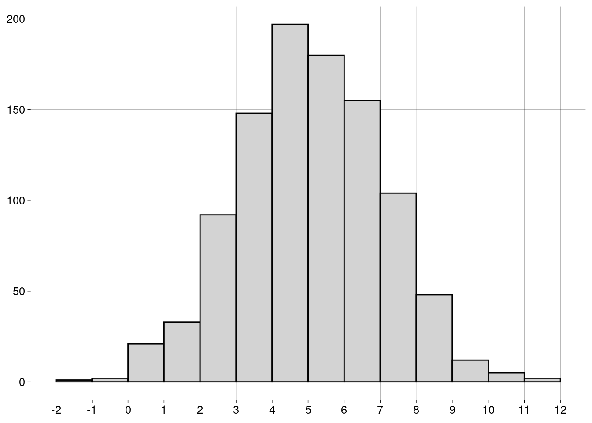
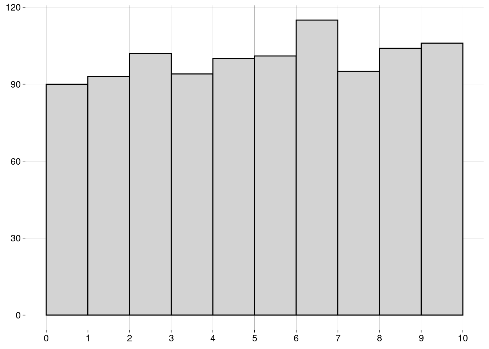

Capítulo 6 Medidas
6.2 Medidas de centralidade
6.2.1 Média
-
A média de uma população é escrita como \(\mu\), e é definida como \[\mu = \frac{\sum_{i=1}^N x_i}{N}\]
\(\sum_{i=1}^N x_i\) é a soma de todos os dados da população.
\(N\) é a quantidade de elementos na população.
-
A média de uma amostra é escrita como \(\bar x\), e é definida como: \[\bar x = \frac{\sum_{i=1}^n x_i}{n}\]
\(\sum_{i=1}^n x_i\) é a soma de todos os dados da amostra.
\(n\) é a quantidade de elementos na amostra.
O cálculo é essencialmente o mesmo. Só mudam os símbolos: \(N\) versus \(n\), e \(\mu\) versus \(\bar x\).
6.2.2 Mediana
Já aprendemos sobre a mediana na seção sobre boxplots.
A idéia é que, depois de ordenar os dados, \(50\%\) dos dados estarão à esquerda da mediana, e \(50\%\) à direita.
A mediana não é tão sensível a outliers quanto à média.
6.2.3 Moda
A moda é o valor mais frequente do conjunto de dados.
Pode haver mais de uma moda.
Não existe uma função para a moda em R base. Por quê?
Por incrível que pareça, é complicado definir a moda de forma a conseguir resultados interessantes.
-
Por exemplo, vamos definir um conjunto de \(1000\) valores numéricos distribuídos normalmente4, com média igual a \(5\) e desvio-padrão5 igual a \(2\):
normal <- rnorm(1000, mean = 5, sd = 2) -
O histograma dos nossos dados é
 -
Vamos calcular a moda com a função
mfv(most frequent value), do pacotemodeest:## Registered S3 method overwritten by 'rmutil': ## method from ## print.response httr# Por causa de um bug na função mfv, # precisamos de números com ponto decimal # (em vez de vírgula): options(OutDec = '.') mfv(normal)## [1] -0.44331663 -0.36087383 -0.04903074 0.13950281 0.19070899 0.49250077 ## [7] 0.57591016 0.67589803 0.68575984 0.83699019 0.83863357 0.85034622 ## [13] 0.86403516 0.86841914 0.95839758 0.96167843 1.02115252 1.02757685 ## [19] 1.04000394 1.08534476 1.08957308 1.11044058 1.12042283 1.14927301 ## [25] 1.18230374 1.18461400 1.23071239 1.25638979 1.27082229 1.28192073 ## [31] 1.31693423 1.32563431 1.33330959 1.33618702 1.38323048 1.42195617 ## [37] 1.45629980 1.46911086 1.50295710 1.53506113 1.57622598 1.59035525 ## [43] 1.59063803 1.62744376 1.62909562 1.65219273 1.66596165 1.67361884 ## [49] 1.79635983 1.80035842 1.80624344 1.83894490 1.84864088 1.84898359 ## [55] 1.86115001 1.86318451 1.87448545 1.88619338 1.95602122 1.95997232 ## [61] 1.99259364 2.00906145 2.01232542 2.02353989 2.03323067 2.03867862 ## [67] 2.03895014 2.07542101 2.07707745 2.09561915 2.10468641 2.10477114 ## [73] 2.11440143 2.13305293 2.16080602 2.17705779 2.18009839 2.19563977 ## [79] 2.19648298 2.21327647 2.21490373 2.23147068 2.23480516 2.24073335 ## [85] 2.25196974 2.26779686 2.27612655 2.31079131 2.34938863 2.35814091 ## [91] 2.36026530 2.36158027 2.39116380 2.40469719 2.42475403 2.45511209 ## [97] 2.45932098 2.47829588 2.48137398 2.48719040 2.50402819 2.53769840 ## [103] 2.54081637 2.54579143 2.54834692 2.54988067 2.56555660 2.57106732 ## [109] 2.57399725 2.57914426 2.59628790 2.60242727 2.61011318 2.61751235 ## [115] 2.62145665 2.63835637 2.64826432 2.65716087 2.66975611 2.67552510 ## [121] 2.68317983 2.69005330 2.69255958 2.71804302 2.72528099 2.72659504 ## [127] 2.72797228 2.74107401 2.74463941 2.75718638 2.77865628 2.79599474 ## [133] 2.79733839 2.82315344 2.84616683 2.86440906 2.87057041 2.87326303 ## [139] 2.89068809 2.90620387 2.92979729 2.95286307 2.95615586 2.96021593 ## [145] 2.96609967 3.00919150 3.01052086 3.01110576 3.01677363 3.01754300 ## [151] 3.01766994 3.02087642 3.02198389 3.02852960 3.03875944 3.06219316 ## [157] 3.07160978 3.07807746 3.08116815 3.08358434 3.09756687 3.09766161 ## [163] 3.10223236 3.10410441 3.10538098 3.11062966 3.11213325 3.16205098 ## [169] 3.16341964 3.17235586 3.17330745 3.17580224 3.18222148 3.18240078 ## [175] 3.18468072 3.18599589 3.20673903 3.21793184 3.22903092 3.23391499 ## [181] 3.23653536 3.24196048 3.24706888 3.26303715 3.26882251 3.28679153 ## [187] 3.29472177 3.30640908 3.32016671 3.32423613 3.32744033 3.34767553 ## [193] 3.35978771 3.36985001 3.37680844 3.38283353 3.38635636 3.38975485 ## [199] 3.42057996 3.42087216 3.46000008 3.46179963 3.47133599 3.47924425 ## [205] 3.48078107 3.48939214 3.49538726 3.50747019 3.51320254 3.52435183 ## [211] 3.53111818 3.54277432 3.54829118 3.55638593 3.58123931 3.58571084 ## [217] 3.59129209 3.59904287 3.60628633 3.60698307 3.61366591 3.62365759 ## [223] 3.62401231 3.62930263 3.62967822 3.63257680 3.63636258 3.65035098 ## [229] 3.66445192 3.66564290 3.67113522 3.67464761 3.69870026 3.71792053 ## [235] 3.72023369 3.72194023 3.72777260 3.73123965 3.74196510 3.74707988 ## [241] 3.75437165 3.75538128 3.76277099 3.76364075 3.77165965 3.78035935 ## [247] 3.78122747 3.78182189 3.78997603 3.79594731 3.79610716 3.79846382 ## [253] 3.79882206 3.79964701 3.80284169 3.81313539 3.81514574 3.81987708 ## [259] 3.81999678 3.84947991 3.84966919 3.86246211 3.86510045 3.87131912 ## [265] 3.88038359 3.89249915 3.89297370 3.89317541 3.90127767 3.90634828 ## [271] 3.90787121 3.91131375 3.91283438 3.92211098 3.92744892 3.93320488 ## [277] 3.93575423 3.94275743 3.94761587 3.94931654 3.95228275 3.95984272 ## [283] 3.96457606 3.96926683 3.98952983 3.99098978 3.99600527 3.99912572 ## [289] 4.00105476 4.00413724 4.00797380 4.01238126 4.01445098 4.01467888 ## [295] 4.01697585 4.02719551 4.02865942 4.03940952 4.05010238 4.05039119 ## [301] 4.07429078 4.08470730 4.10644420 4.10754259 4.10832133 4.10899165 ## [307] 4.11865793 4.12333906 4.12417429 4.12618852 4.12705373 4.12982187 ## [313] 4.14329699 4.14833836 4.14912503 4.15679865 4.16274408 4.16359886 ## [319] 4.20614858 4.20688736 4.20806571 4.21659917 4.22355794 4.22816651 ## [325] 4.23049483 4.24029030 4.24376463 4.24525142 4.24975968 4.25100543 ## [331] 4.25933786 4.26112128 4.26344480 4.26617974 4.27167973 4.27454231 ## [337] 4.28157175 4.28277673 4.28823918 4.28963788 4.29277910 4.29451813 ## [343] 4.30578098 4.30966844 4.32223405 4.33644380 4.33849324 4.34763525 ## [349] 4.34824388 4.34921864 4.35553499 4.35603001 4.36567983 4.37041283 ## [355] 4.37168136 4.37181841 4.37793130 4.38260145 4.38486050 4.38766163 ## [361] 4.38921103 4.39154794 4.39552682 4.39888173 4.40173811 4.40465570 ## [367] 4.40741187 4.41116047 4.41151045 4.41174051 4.41356229 4.41868184 ## [373] 4.42476516 4.42665289 4.44509073 4.44589126 4.44635321 4.44788291 ## [379] 4.45224509 4.45612326 4.46252685 4.46310494 4.47960545 4.47984419 ## [385] 4.48805915 4.49726726 4.49801560 4.49829508 4.50040156 4.50548902 ## [391] 4.51057008 4.51062346 4.51197624 4.53269546 4.53320747 4.54459932 ## [397] 4.55191496 4.56606706 4.56883630 4.59376449 4.59740044 4.59749300 ## [403] 4.59861027 4.60174014 4.60282323 4.61357654 4.61870406 4.62776845 ## [409] 4.62825421 4.63296625 4.63723642 4.64145091 4.65139865 4.65182947 ## [415] 4.65830548 4.65994072 4.66287173 4.66618773 4.66886383 4.67620847 ## [421] 4.68962123 4.69034379 4.69250651 4.69678476 4.70091888 4.70722294 ## [427] 4.71324440 4.71341283 4.72119535 4.72201680 4.72288085 4.72290340 ## [433] 4.72403684 4.72966197 4.73352981 4.73452808 4.73579316 4.73808183 ## [439] 4.74073522 4.74846467 4.76259859 4.76295954 4.77567081 4.77649356 ## [445] 4.78237559 4.78325972 4.78532782 4.78723748 4.78821389 4.78895435 ## [451] 4.79199368 4.79454944 4.79481517 4.79855065 4.80268937 4.80617824 ## [457] 4.80773528 4.80999880 4.81116611 4.81228997 4.81487263 4.82175711 ## [463] 4.82326435 4.82336974 4.83175946 4.84391064 4.84549075 4.84891697 ## [469] 4.85190614 4.85312636 4.85354051 4.86141088 4.86645111 4.88192413 ## [475] 4.88434434 4.88903978 4.89361573 4.89844113 4.90231203 4.90547395 ## [481] 4.90832359 4.91182700 4.91215391 4.92349581 4.93025157 4.93067092 ## [487] 4.93364724 4.93632784 4.94937229 4.95746594 4.95870801 4.95976787 ## [493] 4.96944776 4.97041174 4.97165232 4.97865002 4.97911539 4.98046396 ## [499] 4.99097150 4.99823152 5.00166036 5.00356937 5.00820543 5.01112501 ## [505] 5.01653852 5.02625729 5.02638308 5.02668501 5.02750201 5.03506997 ## [511] 5.03882960 5.04199129 5.04276513 5.04455636 5.04655895 5.05276309 ## [517] 5.05651800 5.06836565 5.07345122 5.07550628 5.07824353 5.08422667 ## [523] 5.08844677 5.09445849 5.09614326 5.09689172 5.10491361 5.12917018 ## [529] 5.12935561 5.13360810 5.13758689 5.14336420 5.15150899 5.15325817 ## [535] 5.15330491 5.15389181 5.15456638 5.16660956 5.16935971 5.17431134 ## [541] 5.17445357 5.17681018 5.19002952 5.19089980 5.19612934 5.19769820 ## [547] 5.19833635 5.20140293 5.20620961 5.21655927 5.22834897 5.23610393 ## [553] 5.23882231 5.24333340 5.24467626 5.25082613 5.25202895 5.25992966 ## [559] 5.26393317 5.28744247 5.28797805 5.29066187 5.29954792 5.30463252 ## [565] 5.30916743 5.30948748 5.31484650 5.31556863 5.32318444 5.32560528 ## [571] 5.32586555 5.32766285 5.32912125 5.33987986 5.34339659 5.36767102 ## [577] 5.37014009 5.39629315 5.39644331 5.40405011 5.40445363 5.40479375 ## [583] 5.41140771 5.41239930 5.41334732 5.42081545 5.42202668 5.42726542 ## [589] 5.42910288 5.43404478 5.44064676 5.44141359 5.44217900 5.44781881 ## [595] 5.45476059 5.45828569 5.46015375 5.46068668 5.46479111 5.46545702 ## [601] 5.46938592 5.49754624 5.50835105 5.51322777 5.51331497 5.51881271 ## [607] 5.52051829 5.52452886 5.52524684 5.52876168 5.53184971 5.53592761 ## [613] 5.53804742 5.53913050 5.54501357 5.55428184 5.55574814 5.55595529 ## [619] 5.55959636 5.56084670 5.56133439 5.57423113 5.57570057 5.60442805 ## [625] 5.61669642 5.62976188 5.63311799 5.63627287 5.63652473 5.64006014 ## [631] 5.64098118 5.64540652 5.64683277 5.65622027 5.65797148 5.66137088 ## [637] 5.66336289 5.66588467 5.68216012 5.69702189 5.70905749 5.71177991 ## [643] 5.71230093 5.72147854 5.72858671 5.73005067 5.73209933 5.74497538 ## [649] 5.74873408 5.75669260 5.75788214 5.76348447 5.77348045 5.77736171 ## [655] 5.77977783 5.78399407 5.78697928 5.79093474 5.79669908 5.82085432 ## [661] 5.82523194 5.82629209 5.82851823 5.83049882 5.83178927 5.83617080 ## [667] 5.85074509 5.85158552 5.85810343 5.87095179 5.87579365 5.88287878 ## [673] 5.89440998 5.90187461 5.91146553 5.91242655 5.91382157 5.91382337 ## [679] 5.92007452 5.92291173 5.92721110 5.92841428 5.94019505 5.94410760 ## [685] 5.96058350 5.96807155 5.97336748 5.98879292 5.98983234 5.99063974 ## [691] 5.99395441 5.99709329 5.99919500 6.00938159 6.00950278 6.01032526 ## [697] 6.02602170 6.02681663 6.02842339 6.02930203 6.03059153 6.03580712 ## [703] 6.03606198 6.03658428 6.04589797 6.05501075 6.06451091 6.06883664 ## [709] 6.06938149 6.07057249 6.07808703 6.08523762 6.08871360 6.09256575 ## [715] 6.10006333 6.10810064 6.11320820 6.11375588 6.11688867 6.12010006 ## [721] 6.13183947 6.13573571 6.13574760 6.13775146 6.14034929 6.15593688 ## [727] 6.15913855 6.15976959 6.18445757 6.18805568 6.19352447 6.19986096 ## [733] 6.20149820 6.21664094 6.21797804 6.22020248 6.23084532 6.23101023 ## [739] 6.23367119 6.23986820 6.24037878 6.25562994 6.26126904 6.26161982 ## [745] 6.27266851 6.27306849 6.27535704 6.27632094 6.27834715 6.28205044 ## [751] 6.29199777 6.29551240 6.31118135 6.32131445 6.32924451 6.33646202 ## [757] 6.34186803 6.34524347 6.34645186 6.34647946 6.34770479 6.35138076 ## [763] 6.36434181 6.36552250 6.36662648 6.36798642 6.37138768 6.38568389 ## [769] 6.39291893 6.39437531 6.39638436 6.40011151 6.40440063 6.41329091 ## [775] 6.41917003 6.43141514 6.43217157 6.43480217 6.43895882 6.44483869 ## [781] 6.44713090 6.45006382 6.45235109 6.45237653 6.46261312 6.47854290 ## [787] 6.47977831 6.48505394 6.49148505 6.49300509 6.49314624 6.50214761 ## [793] 6.50513762 6.51127275 6.51156843 6.51549675 6.52480775 6.52816855 ## [799] 6.53075340 6.56265718 6.57589137 6.58207732 6.58334038 6.58581713 ## [805] 6.60646421 6.61010729 6.62157807 6.62235722 6.62435189 6.65274634 ## [811] 6.65782291 6.65963446 6.66155462 6.66340949 6.66887348 6.68396476 ## [817] 6.68618772 6.70278913 6.70443744 6.70560102 6.71521564 6.72861906 ## [823] 6.75557145 6.75897801 6.76793696 6.76859758 6.77016210 6.78319369 ## [829] 6.83337522 6.83998243 6.85689492 6.86592730 6.86716249 6.87256234 ## [835] 6.87480034 6.91221797 6.91246270 6.91944517 6.93225799 6.93711456 ## [841] 6.94918700 6.95196455 6.95819893 6.95976432 6.96355348 6.97017326 ## [847] 6.97096673 6.97275667 6.97833544 6.98858045 6.98971886 6.99981177 ## [853] 7.00339055 7.00525109 7.00656784 7.01319783 7.02119419 7.02277875 ## [859] 7.02349845 7.02925972 7.04532197 7.04595884 7.06293366 7.07729004 ## [865] 7.08363012 7.10860982 7.12561225 7.12870013 7.14035049 7.15948798 ## [871] 7.16214851 7.16259532 7.17346679 7.17751098 7.17793443 7.17970684 ## [877] 7.18604845 7.19778147 7.22726340 7.23689473 7.24881992 7.25162931 ## [883] 7.26143131 7.26684635 7.26746847 7.27082947 7.27998915 7.28701383 ## [889] 7.28870500 7.30447489 7.30615805 7.30969536 7.31212900 7.31583179 ## [895] 7.32191584 7.32313095 7.32379179 7.34153200 7.34969629 7.35290860 ## [901] 7.35476157 7.36887285 7.40369028 7.42974503 7.44280205 7.45419487 ## [907] 7.47343600 7.50377565 7.51253875 7.52954466 7.57174434 7.57331198 ## [913] 7.65586936 7.67276486 7.68294854 7.69573295 7.70161488 7.72120104 ## [919] 7.72775012 7.73136669 7.73183310 7.73763636 7.74506388 7.76283258 ## [925] 7.79739603 7.79946918 7.80366131 7.82187968 7.88355283 7.88702341 ## [931] 7.89445257 7.90392488 7.91389972 7.91521382 7.92856151 7.95089298 ## [937] 7.96624913 7.97005843 7.97531112 7.97547582 7.97956508 7.98198466 ## [943] 7.99021086 8.02277162 8.02478864 8.02731875 8.03523725 8.04017723 ## [949] 8.08870674 8.10956405 8.10989856 8.12779517 8.14253266 8.18884698 ## [955] 8.20430960 8.27320468 8.27782705 8.29395954 8.30550253 8.31354049 ## [961] 8.31769077 8.35014785 8.38762343 8.42561617 8.43939224 8.44219668 ## [967] 8.47779610 8.48771612 8.49890473 8.52529231 8.62742049 8.69715044 ## [973] 8.70528559 8.71132023 8.71330849 8.72846271 8.73433074 8.76461210 ## [979] 8.78999840 8.80620132 8.86858947 8.95173653 8.97576373 9.00997552 ## [985] 9.13516308 9.21341069 9.25729825 9.25804848 9.29546075 9.33642204 ## [991] 9.61173127 9.64258014 9.69050288 9.76799755 9.77537946 9.81221897 ## [997] 9.83713556 9.83894594 10.40723247 11.82004563# Voltamos para a vírgula como separador decimal: options(OutDec = ',') O que houve?!
O problema é que não há valores repetidos no conjunto de dados! Por isso, todos os \(1000\) valores são modais.
-
Uma maneira de evitar isto é definir a moda como o centro do intervalo mais curto que contém metade dos dados. Usamos a função
mlv(most likely value):moda <- mlv(normal, method = 'venter') moda## [1] 5,220953 -
Esta moda estimada pode nem estar no conjunto de dados:
moda %in% normal## [1] FALSE Mas o resultado de
mlv()é útil, pois nos diz que, embora não haja valores repetidos, valores próximos de \(5\) são mais frequentes, como mostra o histograma.
6.2.3.1 Exercícios
-
Arrendonde os valores no vetor
normalpara \(2\) casas decimais e ache a(s) moda(s)com a função
mfv, ecom a função
mlv, usando o métodoventer.
Considerando o histograma, qual das respostas você prefere? Por quê?
6.3 Formas de uma distribuição
- A forma do histograma mostra aspectos importantes da distribuição dos dados.
6.3.1 Distribuição Uniforme
-
Se o histograma tem todas as barras aproximadamente da mesma altura, dizemos que a distribuição é uniforme:
 A distribuição uniforme não tem moda, já que todos os valores têm aproximadamente a mesma frequência.
6.3.2 Simetria
Se o histograma for simétrico (i.e., os lados esquerdo e direito são “espelhados”), dizemos que a distribuição é simétrica.
A distribuição normal do exemplo acima é simétrica.
A distribuição uniforme também é simétrica.
-
Para distribuições simétricas, a média, a mediana e a moda (quando existe e é única) são bem próximas.
-
Uma distribuição pode ser simétrica, mas ter duas (ou mais) modas diferentes:

Algumas distribuições não são simétricas, mas têm uma cauda longa à esquerda ou à direita.
Dependendo da cauda, as distribuições são chamadas de assimétricas à esquerda ou assimétricas à direita.
-
Um exemplo: receitas anuais (em milhões de dólares) de CEOs de grandes empresas:
## Rows: 500 ## Columns: 9 ## $ Rank <dbl> 1, 2, 3, 4, 5, 6, 7, 8, 9, 10, 11, 12, 13, 14, 15, 16… ## $ Name <chr> "John H Hammergren", "Ralph Lauren", "Michael D Fasci… ## $ Company <chr> "McKesson", "Ralph Lauren", "Vornado Realty", "Kinder… ## $ `1-Year Pay ($mil)` <dbl> 131,190, 66,650, 64,405, 60,940, 55,790, 51,525, 50,1… ## $ `5 Year Pay ($mil)` <dbl> 285,020, 204,060, NA, 60,940, 96,110, 100,210, 90,300… ## $ `Shares Owned ($mil)` <dbl> 51,9, 5010,4, 171,7, 8582,3, 21,5, 47,3, 128,2, 155,8… ## $ Age <dbl> 53, 72, 55, 67, 59, 57, 55, 59, 61, 60, 59, 56, 63, 5… ## $ Efficiency <dbl> 121, 84, NA, NA, 138, 36, 12, NA, 91, 131, 150, NA, 1… ## $ `Log Pay` <dbl> 8,117901, 7,823800, 7,808920, 7,784902, 7,746556, 7,7… -
Vamos usar apenas os nomes e os valores anuais:
-
Um histograma:
salarios %>% ggplot(aes(x = valor)) + geom_histogram(breaks = seq(0, 150, 2.5)) + scale_x_continuous(breaks = seq(0, 150, 10)) + labs(y = NULL)
É uma distribuição assimétrica à direita: a maior parte dos CEOs têm receitas anuais “baixas”, de menos de \(10\) milhões. À medida que examinamos valores maiores, a quantidade de CEOs vai diminuindo lentamente.
Observe que a longa cauda à direita “puxa” a média para um valor mais alto do que a mediana.
-
A moda, que corresponde à barra mais alta do histograma, é menor que a mediana (e que a média):
sumario <- salarios %>% summarise( moda = mlv(valor, method = 'venter'), mediana = median(valor), media = mean(valor) ) sumario -
Em um boxplot, também é possível detectar a assimetria pela grande quantidade de outliers em um extremo:
salarios %>% ggplot(aes(y = valor)) + geom_boxplot() + scale_x_continuous(breaks = NULL) + scale_y_continuous(breaks = seq(0, 150, 10))
Com distribuições assimétricas à esquerda, a situação se inverte: a média é menor que a mediana, que é menor que a moda.
6.4 Re-expressão
Muitas vezes, é recomendável transformar a escala dos dados para que uma distribuição assimétrica se torne simétrica.
-
No exemplo das receitas dos CEOs, podemos tomar os logaritmos dos valores, em vez dos valores:
salarios_log %>% ggplot(aes(x = log_valor)) + geom_histogram(bins = 20) + labs( x = TeX('$\\log_{10}$ valor'), y = NULL )## Warning: Removed 3 rows containing non-finite values (stat_bin).
O logaritmo de um número na base \(10\) é, essencialmente, a quantidade de dígitos do número, vista como uma grandeza contínua.
Logaritmos negativos vêm de valores entre \(0\) e \(1\).
Logaritmo zero vem do valor \(1\).
Valores iguais ou menores que zero não têm logaritmo definido.
-
Por isso a mensagem de aviso sobre \(3\) valores removidos. São valores iguais a zero:
Uma vantagem desta escala logarítmica é que podemos entender melhor o histograma. Os dados não estão amontoados de um lado só.
6.5 Medidas de posição
6.5.1 Quantis
Na seção sobre boxplots, falamos sobre quantis, que são medidas de posição.
-
Em R, a função
quantilecalcula quantis de um vetor:## 0% 25% 50% 75% 100% ## 0,00000 3,88500 6,96750 13,36125 131,19000 -
Você pode passar frações entre \(0\) e \(1\) para
quantile. Por exemplo, para calcular o primeiro, o quinto, e o décimo percentis6 das receitas dos CEOs:## 1% 5% 10% ## 0,48695 1,48405 2,19400
6.6 Medidas de dispersão
Tão importantes quanto as medidas de centralidade são as medidas de dispersão (ou espalhamento).
Elas informam o quanto os dados variam.
6.6.1 Amplitude
Uma medida simples é a diferença entre o valor máximo e o valor mínimo.
-
Lembrando do nosso exemplo das idades dos alunos:
idades## [1] 20 20 20 20 20 20 21 21 21 21 22 22 22 23 23 23 23 24 24 65 -
A função
rangeretorna o mínimo e o máximo:range(idades)## [1] 20 65 -
A amplitude destes dados é, então
## [1] 45 A diferença de idade entre o aluno mais novo e o mais velho é de \(45\) anos, um valor alto, por causa do velhinho.
6.6.2 IQR
Na seção sobre boxplots, também falamos sobre o intervalo interquartil (IQR).
-
No boxplot, é a altura da caixa. Para as idades dos alunos:
idades %>% as_tibble() %>% ggplot(aes(y = value)) + geom_boxplot() + scale_x_continuous(breaks = NULL) + scale_y_continuous(breaks = seq(20, 70, 5))
-
O IQR é a diferença entre o primeiro e o terceiro quartis:
summary(idades)## Min. 1st Qu. Median Mean 3rd Qu. Max. ## 20,00 20,00 21,50 23,75 23,00 65,00## [1] 3IQR(idades)## [1] 3 Ou seja, os \(50\%\) centrais dos alunos têm idade entre \(20\) e \(23\) anos, um IQR de \(3\).
É uma variação pequena, porém mais fiel à realidade do que a amplitude, que é alta por causa do velhinho.
Quanto maior o IQR, mais espalhados estão os dados.
6.6.3 Variância
-
Agora, vamos trabalhar com os pesos (kg) e alturas (m) de um time de basquete:
medidas <- tibble( altura = .025 * c(72, 74, 68, 76, 74, 69, 72, 79, 70, 69, 77, 73), peso = 0.45 * c(180, 168, 225, 201, 189, 192, 197, 162, 174, 171, 185, 210) ) medidassummary(medidas$altura)## Min. 1st Qu. Median Mean 3rd Qu. Max. ## 1,700 1,744 1,812 1,819 1,863 1,975summary(medidas$peso)## Min. 1st Qu. Median Mean 3rd Qu. Max. ## 72,90 77,96 84,15 84,53 89,10 101,25 A variância é a maneira mais usada de medir o espalhamento em torno da média.
Para calcular a variância das alturas e a variância dos pesos, precisamos calcular valores intermediários.
-
O desvio de um valor é a diferença entre o valor e a média. O desvio pode ser positivo ou negativo.
d_medidas <- medidas %>% mutate( d_altura = altura - mean(altura), d_peso = peso - mean(peso) ) d_medidas -
Vamos calcular o desvio médio das alturas e o desvio médio dos pesos:
Não foi uma boa idéia. O desvio médio sempre é igual a zero.7 (O R pode mostrar algum valor diferente de zero por causa da precisão limitada dos números de ponto flutuante.)
-
Como resolver isto? Elevando os desvios ao quadrado:
Agora temos os desvios quadrados, que são todos positivos.
-
O desvio quadrado médio vai ser a variância:
Uma vantagem da variância é que outliers (que têm desvios quadrados maiores) contribuem mais do que elementos próximos à média (que têm desvios quadrados menores).
Uma desvantagem da variância é que a sua unidade é o quadrado da unidade dos valores.
Neste exemplo, as unidades são \(m^2\) e \(kg^2\)!
6.6.4 Desvio-padrão
É melhor trabalhar com a raiz quadrada da variância, que chamamos de desvio-padrão.
-
As unidades são as mesmas que as unidades dos dados.
-
Claro que o R tem funções para calcular isso:
varesd(standard deviation):medidas %>% summarize( altura_var = var(altura), altura_dp = sd(altura), peso_var = var(peso), peso_dp = sd(peso) ) Mas os valores são diferentes dos que calculamos. Por quê?
6.6.5 Definições
-
Para uma população com \(N\) elementos e média \(\mu\), a variância é
\[ \sigma^2 = \frac{\sum_{i=1}^N (x_i - \mu)^2}{N} \]
e o desvio-padrão é
\[ \sigma = \sqrt{\frac{\sum_{i=1}^N (x_i - \mu)^2}{N}} \]
-
Para uma amostra com \(n\) elementos e média \(\bar x\), a variância é
\[ s^2 = \frac{\sum_{i=1}^n (x_i - \bar x)^2}{n-1} \]
e o desvio-padrão é
\[ s = \sqrt{\frac{\sum_{i=1}^n (x_i - \bar x)^2}{n -1}} \]
Nós calculamos a versão populacional destas medidas.
R calcula a versão amostral destas medidas.
Reveja os cálculos e entenda a diferença.
Note, também, que as medidas populacionais são representadas por letras gregas — \(\mu\), \(\sigma^2\), \(\sigma\) —, enquanto as medidas amostrais são representadas por letras latinas — \(\bar x\), \(s^2\), \(s\).
Mais adiante no curso, você vai entender por que o denominador da variância amostral é \(n - 1\), em vez de \(n\).
Nada é por acaso, nem mesmo em Estatística.
6.6.6 Exercícios
Quando a variância e o desvio-padrão de um conjunto de dados são iguais a zero?
-
Mostre que o desvio médio de qualquer conjunto de valores é igual a zero.
Ou seja, considere o conjunto
\[ \{x_1, x_2, \ldots, x_n\} \]
e prove que
\[ \sum_{i = 1}^n (x_i - \bar x) = 0 \]
Manipule apenas as variáveis \(x_i\). Não use exemplos, pois eles não provam o enunciado geral.
Dica: lembre que \(\displaystyle \bar x = \frac{\sum_{i = 1}^n x_i}{n}\).
6.7 Coeficiente de variação
Em um conjunto de dados, o desvio-padrão é uma medida importante da variação dos dados.
Mas a unidade do desvio-padrão muda de um conjunto de dados para outro: alturas em metros, pesos em quilos etc.
Podemos eliminar as unidades expressando o desvio-padrão em termos da média.
O resultado é a fração \(\frac{\sigma}{\mu}\) (na população) ou \(\frac{s}{\bar x}\) na amostra.
Esta fração é o coeficiente de variação (CV).
O CV não tem unidades.
-
Para as alturas do exemplo dos jogadores de basquete:
A média das alturas é \(1{,}82\) metros.
O desvio-padrão das alturas é \(0{,}09\) metros.
O CV é aproximadamente \(0{,}0473\).
statip::cv(medidas$altura)## [1] 0,04729982Em outras palavras, para as alturas, um desvio-padrão corresponde a \(4{,}73\%\) da média.
-
Para os pesos:
A média dos pesos é \(84{,}53\) quilos.
O desvio-padrão dos pesos é \(8{,}31\) quilos.
O CV é aproximadamente \(0{,}0983\).
statip::cv(medidas$peso)## [1] 0,09834649Em outras palavras, para os pesos, um desvio-padrão corresponde a \(9{,}83\%\) da média.
Segundo estes valores, a variação dos pesos é cerca de \(2\) vezes maior do que a variação das alturas.
O coeficiente de variação sempre faz sentido para dados do nível racional (veja a definição) — i.e., dados onde o zero é absoluto.
Para dados apenas intervalares, o uso do CV pode levar a conclusões absurdas, como você terá chance de ver no exercício.
6.7.1 Exercícios
-
Considere o seguinte conjunto de temperaturas (em graus Celsius):
celsius <- c(0, 10, 20, 30, 40) -
E as mesmas temperaturas (em graus Fahrenheit):
fahrenheit <- 9 * celsius / 5 + 32 -
Calcule para cada um dos dois vetores acima:
A média,
O desvio-padrão,
O coeficiente de variação.
As temperaturas são as mesmas (apenas em unidades diferentes), mas os CVs são diferentes. Por quê?
-
Agora, convertemos as mesmas temperaturas para a escala Kelvin:
kelvin <- celsius + 273.15 -
E para a escala Rankine:
rankine <- fahrenheit + 459.67 -
Calcule para cada um dos dois vetores acima:
A média,
O desvio-padrão,
O coeficiente de variação.
-
Compare:
As médias de
celsiusekelvin,As médias de
fahrenheiterankine,Os desvios-padrão de
celsiusekelvin,Os desvios-padrão de
fahrenheiterankine,Os coeficientes de variação de
kelvinerankine.
Explique o que houve.
6.8 Escores-padrão
Para qualquer conjunto de dados, a unidade usada é uma escolha arbitrária.
Para alturas, por exemplo, podemos usar metros, centímetros, pés, polegadas etc.
A escolha de unidades é tão arbitrária que podemos escolher uma unidade (que dificilmente vai ter nome) que faça com que a média do conjunto de dados seja zero e que o desvio-padrão seja igual a \(1\).
Isto equivale a tomar, como unidade, o desvio-padrão acima da média.
Os valores, nesta nova unidade, são chamados de escores-padrão.
Dizemos que os valores foram padronizados.
Vamos usar as alturas dos jogadores de basquete.
-
Para fazer a altura média virar zero, basta subtrair, de cada altura, a altura média:
alturas <- medidas$altura mean(alturas)## [1] 1,81875## [1] 0 -
Para fazer o desvio-padrão ser igual a \(1\), basta dividir estes valores pelo desvio-padrão dos dados originais:
sd(alturas)## [1] 0,08602656## [1] 1 -
Tome, por exemplo, o seguinte jogador:
altura <- alturas[1] altura## [1] 1,8## [1] -0,217956Faça as contas: o valor da altura padronizada deste jogador significa que a altura dele está \(0{,}217956\) desvios-padrão abaixo da altura média.
-
No geral:
Se a média for \(\bar x\), e
Se o desvio-padrão for \(s\),
Os escores-padrão \(z_i\) vão ser \[ z_i = \frac{x_i - \bar x}{s} \]
-
Em R, a função
scalefaz isso:medidas <- medidas %>% mutate(altura_padronizada = scale(altura)[,1]) medidas %>% select(altura, altura_padronizada)mean(medidas$altura_padronizada)## [1] -0,000000000000000004610683sd(medidas$altura_padronizada)## [1] 1 A função
scalefoi feita para receber e retornar matrizes. Como estamos trabalhando com vetores, usamosscale(altura)[,1]para tomar apenas a primeira (e única) coluna do resultado.
6.8.1 Exercícios
Por que, quando calculamos as alturas deslocadas divididas pelo desvio-padrão das alturas, temos certeza de que a média dos valores resultantes não mudou?
Padronize os pesos dos jogadores de basquete.
Confira a média e o desvio-padrão dos pesos padronizados.
Crie um scatterplot de peso por altura.
Crie um scatterplot de peso padronizado por altura padronizada.
Compare os dois scatterplots. O que muda de um para outro?
6.9 Teorema de Tchebychev
Grosso modo, quanto mais alto o desvio-padrão, maior é a distância da média até os valores.
Ou seja, quanto menor o desvio-padrão, maior é a proporção de valores que estão próximos à média.
-
O teorema de Tchebychev quantifica esta idéia:
Em qualquer distribuição, a proporção de valores dentro de \(\pm k\) desvios-padrão \((k > 1)\) da média é de, no mínimo \[ 1 - \frac{1}{k^2} \]
6.9.1 Exemplo
-
Lembre-se do conjunto de dados sobre os totais de horas de sono de diversos mamíferos:

-
Média e desvio-padrão:
media <- mean(df$value) media## [1] 10,43373dp <- sd(df$value) dp## [1] 4,450357 -
Qual a proporção de espécies que estão a \(1{,}3\) ou menos desvios-padrão de distância da média?
k <- 1.3 inicio <- media - k * dp inicio## [1] 4,648271fim <- media + k * dp fim## [1] 16,2192 -
O teorema diz que no mínimo a seguinte proporção das espécies está dentro deste intervalo:
proporcao_teorema <- 1 - 1 / k^2 proporcao_teorema## [1] 0,408284 -
Graficamente:

-
Vamos conferir:
## [1] 83## [1] 64proporcao_real <- especies_intervalo / total_especies proporcao_real## [1] 0,7710843 Como o teorema usa apenas a média e o desvio-padrão, e mais nenhuma informação sobre a distribuição dos valores — forma, simetria etc. — o que ele garante é, muitas vezes, mais fraco do que a realidade.
Neste exemplo, o teorema garantia no mínimo \(40{,}83\%\) das espécies a \(1{,}30\) ou menos desvios-padrão de distância da média.
A proporção verdadeira é \(77{,}11\%\) das espécies.
O teorema está certo (claro), mas, sem mais informações sobre a distribuição dos dados, o teorema não pode ser mais preciso.